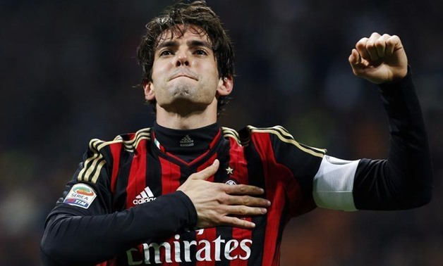
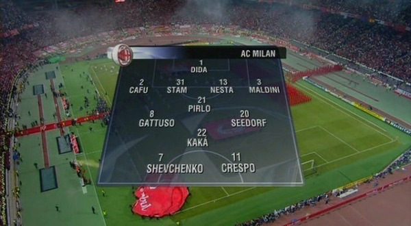
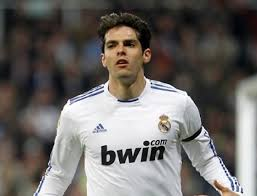
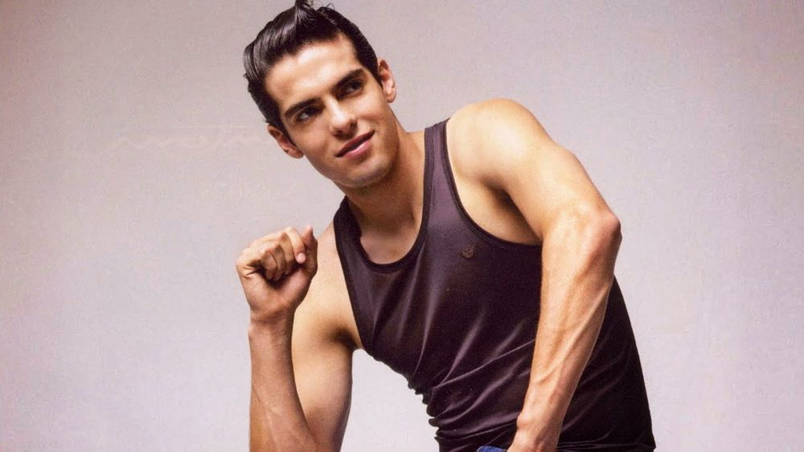
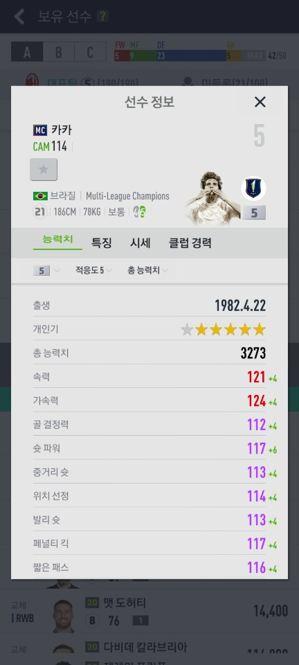
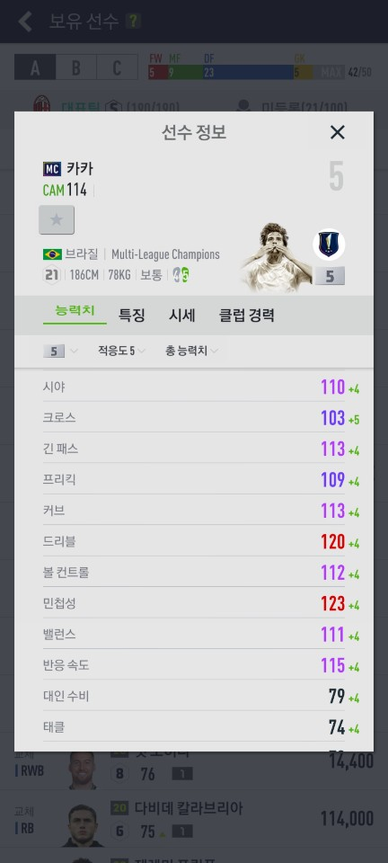
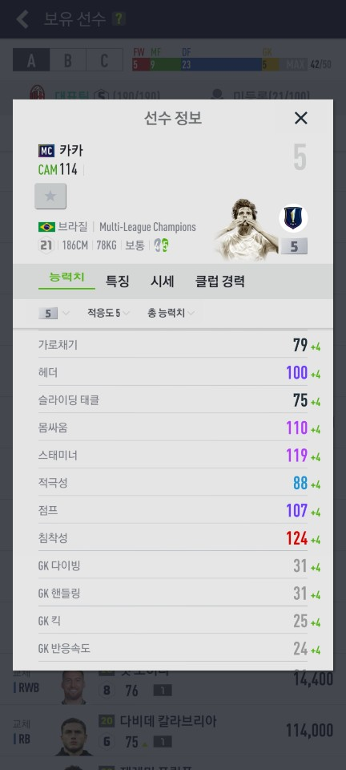

두명의 신 이전에 최강의 인간. 마지막 발롱도르를 탄 사람. 미친 치달과 드리블을 가진 브라질의 슈퍼스타 카카를 알아보자.

기본정보
출생:1982년 4월 22일 브라질 브라질리아 (38세)
국적:브라질 | 이탈리아
신체조건:187cm / 78kg
주발:오른발 (양발)
상파울루 FC (2001~2003) AC 밀란 (2003~2009) 레알 마드리드 CF (2009~2013) AC 밀란 (2013~2014) 올랜도 시티 SC (2014~2017)→ 상파울루 FC (2014 / 임대)
국가대표:92경기 29골 (브라질 / 2002~2016)
종교:개신교
최고 이적료 방출(2009년, To 레알 마드리드 CF, 6700만 유로)
선수소개
AC 밀란의 밀란 제너레이션 2기를 이끌었던 마에스트로이자 호나우두 - 히바우두 - 호나우지뉴로 이어지는 브라질리언 발롱도르 위너의 계보를 이은 마지막 선수이며 신계가 아직 기량이 완전히 무르익기 직전 세계 축구계를 평정했다.
대다수의 브라질 축구선수들과는 달리 제법 유복한 가정에서 태어나, 처음에는 테니스 선수를 꿈꿨다고 한다. 그런 그에게 축구는 진로라기보다는 취미 생활에 가까웠다. 카카는 상파울루 정식 유스 팀이 아닌 서포터즈 유스 팀에서 공을 차기 시작했고, 교사였던 어머니의 교육열 때문에 축구보다 공부에 더 많은 힘을 쏟아야 했다. 어린 시절의 카카는 지나치게 깡마른 체구 탓에 별다른 두각을 나타내지 못했다고 한다.
카카가 공격의 전권을 쥐게 된 것은 카카의 능력과 더불어 당시 밀란의 상황이 맞아 떨어진 까닭이지, 결코 카카가 전통적인 플레이메이커 롤을 능숙하게 소화해 내서는 아니다. 그랬기에 플레이메이커 역할을 더 잘하던 후이 코스타를 주전에서 밀어내고 질라르디노보다 득점이 많았던 것이다.
밀란에서 공격형 미드필더로 뛰던 카카가 현대 축구에 반하던 부분이 있다면, 그것은 카카의 능력이라기보단 AC 밀란과 안첼로티 감독의 능력이다. 카카의 공격력을 최대한 쓸 수 있게 플레이메이커의 역할인 안정적인 볼 배급 및 전체적인 경기조율은 안드레아 피를로가 맡았고 중원에서 개싸움을 펼치고 볼경합을 통해 전방에 힘을 실어주는 것은 젠나로 가투소, 마시모 암브로시니, 클라렌스 세도르프가 맡았다.
이로인해 탄탄한 중원 장악이 받쳐줘 카카는 전성기인 2006/07 시즌 공격에 치중할 수 있었다.

하지만 그는 레알에 이적한 후 적응기간도 필요없었기에 그라운드를 휘젓고 다녔으나, 리그 중반 무릎 부상으로 인해 전성기때의 모든 기량을 상실하고 축구 역사상 최악의 먹튀로 전락하고 말았다.

레알에서의 생활을 끝내고 다시 AC 밀란으로 복귀한 카카는 공격이 아닌 중앙 미드필더로도 많은 경기를 소화했다.
아무래도 과거 전성기의 기량과 주력이 아닐 뿐더러, 현대 축구가 발전하면서 전통적인 플레이메이커 롤은 사장되어 가기 시작했던 시점이었기 때문이다.
그래도 확실히 경험이 많이 쌓였는지, 어느 정도의 조율 능력을 보여 주기도 했고 애초에 잘했던 킬패스 같은 능력이 돋보이면서 중앙 미드필더로도 꽤나 준수한 모습을 보였다.
공격형 미드필더의 꽃이라 불릴 만큼 슈팅, 드리블, 패스 삼박자를 두루 갖춘 선수였다. 퍼스트 터치와 오프더볼 움직임도 훌륭했다. 특히 아직까지도 치달 하면 카카를 떠올리는 사람이 많을 정도로, 압도적인 최대 속력을 유지하는 동시에 공을 컨트롤하는 기술이 월등했다. 이렇게 기술과 스피드, 패스가 강점인 선수는 몸싸움이 약한 경우가 많은데, 카카는 피지컬도 탄탄하고 몸싸움마저 훌륭했다.
부상으로 먹튀가 됐다는 오명과 달리, 팀원의 노쇠화를 홀몸으로 감당해야 했던 07-08 시즌 이전에는 매 시즌 50경기 가까이 소화할 정도로 부상이 적었다. 절정의 폼이었을 때에는 초인이나 다름없었고 이러한 모습 덕분에 신계 두 명을 제치고 2007년 발롱도르를 거머쥐었다.
선수로서 최전성기를 보냈던 AC 밀란 시절에는 치달의 임팩트가 부각되었지만 다른 능력도 뛰어났다. 2004-05 시즌의 리버풀과의 챔피언스 리그 결승전에서 리버풀을 패배 직전까지 몰고 갔던 건 카카의 날카로운 공격 전개와 킬패스였다. 특히 경기를 3:0으로 굳히는듯했던 크레스포를 향한 어시스트는 문자 그대로 대지를 가르는 킬패스. 또한 전성기 시절을 돌이켜 보면 득점력도 무시무시했다. UCL에서 86경기 동안 30골을 넣어서 지금도 역대 득점 기록 20위 안에 들어가고, 특히 2006-07 챔스에서는 10골을 넣어 득점왕이 됐다. UCL 득점왕이 발롱도르를 타는 징크스는 2007년부터 2017년까지 이어졌는데, 이 징크스를 시작한 선수가 바로 카카였다는 것은 유념할 만하다.
카카의 능력이 가장 빛났던 순간은 바로 역습상황인데 좌우 측면과 중앙을 가리지 않는 역대급 치달과 뛰어난 킬패스, 골 결정력으로 커리어 대부분의 공격 포인트를 역습상황에서 쌓았다. 세밀한 드리블 기술과 중거리 슛도 뛰어나 역습상황에서만 쓸 수 있는 반쪽짜리 선수도 아니었다. 전성기 때는 헤딩과 수비 가담을 제외하면 완벽한 선수였다.
물론 이러한 장점들 중 가장 독보적이고 또 다른 장점들을 잘 받쳐 준 건 바로 경악스러운 스피드였다. 때문에 카카의 전성기를 지켜본 세리에 팬들은 스피드를 바탕으로 이지선다의 플레이를 펼치던 정상급 선수가 스피드가 죽으니 다른 능력들마저도 어정쩡해져서 폭망했다고 추측하기도 한다. 또한 부상으로 신체 균형이 깨지면서 몸싸움이 약해진 것도 한 몫 한다. 테크닉과 축구지능도 뛰어났지만 기본적으로 신체 능력에 바탕을 둔 선수였고, 그 정점과 한계를 동시에 보여 준 선수.
카카의 이런 유니크한 플레이 스타일과 수려한 외모 때문에 많은 팬들이 제 2의 카카를 기대하지만, 현재까지 이런 유형의 선수는 찾기 어렵다.
수상경력
발롱도르: 2007
FIFA 올해의 선수: 2007
FIFA FIFPro 월드 XI: 2006, 2007, 2008
UEFA 올해의 클럽 축구 선수: 2006-07
UEFA 올해의 미드필더: 2004-05
UEFA 올해의 공격수: 2006-07
FIFA 월드컵 도움왕: 2010
FIFA 클럽 월드컵 도움왕: 2007
FIFA 클럽 월드컵 결승전 맨 오브 더 매치: 2007
FIFA 컨페더레이션스컵 골든볼: 2009
FIFA 컨페더레이션스컵 결승전 맨 오브 더 매치: 2009
CONCACAF 골드컵 베스트 XI: 2003
세리에 A 올해의 외국인 선수: 2003-04, 2005-06, 2006-07
MLS 올스타: 2015, 2016, 2017
MLS 올스타전 MVP: 2015
옹즈도르: 2007
팔로네 디 아르젠토: 2006-07
IAAF 올해의 남미 운동 선수: 2007
AC 밀란 명예의 전당: 2010
월드 사커 올해의 선수: 2007
lFFHS 세계 최우수 플레이메이커: 2007
마르카 레전드: 2009
삼바도르 : 2008
볼라 지 오우루: 2002
볼라 지 프라타: 2002
여담
젠틀한 엄친아의 이미지에 어울리게도 아내와 서로 혼전순결을 지키며 결혼했다는 일화가 유명하다. 15살 때부터 사귀었다고 한다.
카카가 AC 밀란에서 뛰고있었고 카롤리니는 밀라노 대학에서 공부하고 있었을 때, 카카는 그녀에게 일이 있으니 베네치아에 가자고 했고 카롤리니는 별 생각없이 따라갔는데 레스토랑에서 반지를 꺼내 프러포즈했다고.
그리고 그녀는 크리스챤 디오르 브라질 지부 부사장의 영애. 게다가 엄청난 미녀, 엄친딸 속성이라 모두가 부러워하는 축구선수 커플로 유명했었다. 한 마디로 카카는 나의 우상.
이렇듯 이상적인 커플 + 순정파 이미지로 축복을 받으며 유명해졌지만, 결국 이혼했다.
축구선수 커플 중 가장 이상적인 워너비 커플이었기에 충격이 컸다.
그런데 이혼하고서도 계속적으로 만났다. 본인들 SNS 등을 통해 함께 찍은 사진을 올리고 가족 모임에도 같이 참가했다.
크리스마스부터 새해까지 이어지는 연말이 압권이었는데 카카가 카롤리니의 목덜미에 입맞춤을 하는 사진까지도...그러더니 2015년 1월 5일 재결합을 선언했다.
이혼 파문은 순간적인 감정을 주체하지 못하고 일어난 해프닝으로 마무리 되는 듯 했으나, 2015년 8월 카롤리니가 SNS에 두번째 이혼을 알리는 글을 올렸다.
재결합 후 인스타에 올렸던 닭살 돋는 사진들도 전부 삭제한 상태였다. 처음부터 카카의 첫 이혼에 불륜설이 있기는 했었다. 얼마 후 카카와 바네사가 함께 찍힌 사진이 공개되었고 카롤리니와는 완전히 끝났다.
2016년 12월 또 새로운 여친이 공개되었다. 2016년부터 사귀기 시작한 12살 연하의 1994년생 브라질 배우 겸 모델 카롤리니 디아즈라고 한다.(전 부인과 성이 같다)
카카보다 어린 나이답게 약간 관종 스타일이다. 이전 아내와는 다른 타입의 성격으로 일부 카카팬들은 극도로 기겁한 사건들도 있었을 정도
2019년 11월 30일 가족들, 절친한 친구들이 보는 앞에서 디아즈와 함께 결혼식을 올렸다.
2020년 10월 8일 , 디아즈가 딸을 출산해서 카카는 아들 하나 딸 둘을 둔 아빠가 되었다.
카카의 인스타그램에 올라오는 사진을 보면, 카카는 전 부인과 낳은 두 자녀와의 사이도 원만한 듯 하다.
때때로 서로의 사진이나 아이들 사진에 좋아요를 누른다든가 양가 부모들이 카카와 전 부인 각자의 사진에 좋아요나 댓글을 남기는 모습을 볼 수 있다. 물론 서로 애인이랑 있는 사진엔 절대 좋아요를 누르지 않았다.
꽃미남 타이틀에 젠틀한 성격과 엄친아 이미지. 삼 박자가 맞아 떨어지며 스타성이 우수한 선수로 유명하기도 했다.

18세 때 수영장에서 떨어지는 바람에 척추를 다쳐 축구를 접을 뻔했다는 것은 유명한 일화. 기적적으로 수술이 성공하여 재활에 성공한 카카는 향후 인생의 목표 10단계를 세운다.
1. 다시 축구 선수가 된다.
2. 상파울루 FC에 입단한다.
3. 1군 25명 엔트리에 들어간다.
4. 거기서 다시 17명 엔트리에 들어간다.
5. 베스트 11에 뽑힌다.
6. U-20 국가대표에 선발된다.
7. 성인 국가대표에 선발된다.
8. 국가대표 주전으로 뛴다.
9. 월드컵에서 우승한다.
10. 유럽 명문 구단에서 뛴다.
저 목표들을 23살에 전부 달성했다는 것이 대단하다.
디강이라는 동생이 있는데, 형과 마찬가지로 축구선수로 활동했으며 빼어난 조각 미모를 자랑한다.
다만, 실력은 형에 비하면 안구에 쓰나미가 몰려올 정도라고... 그럼에도 불구하고 2005년 AC 밀란에 입단했는데, 이는 안첼로티 감독과 구단주 실비오 베를루스코니가 카카의 마음을 붙들어 놓기 위한 도구로 데려온 것에 불과하다는 평가가 대다수다.
결국 2013년 MLS의 뉴욕 레드불스에서 은퇴하였다.
이탈리아 방송에 나와서 진행자가 '님은 대체 못하는 게 뭐임?'이라고 질문했더니 춤을 정말 지독하게 못 춘다고 답했다
오랜만에 훈련 후의 뒷풀이가 있다는 소식을 접한 기자들이 선수들의 소위 X파일을 잡으려고 이리저리 추적하고 있었다.
예상대로 여러 선수들이 술집에서 놀다가 여자를 하나씩 끼고 어디론가 사라지는 모습들이 포착되었고, 카카 또한 매의 눈으로 노려지고 있던 상황.
아무리 사생활이 깨끗하다 해도 혈기왕성한 20대 남자가 이럴 때는 놀 거라고 생각한 기자들이 포착한 것은...
-동료 선수들과 헤어진 뒤 공원 벤치에서 성경을 읽는 카카
-성경 책을 접어 가방에 넣고는 공원을 산책하며 성경 구절을 혼잣말로 중얼거리는 카카
?
카카는 매우 독실한 크리스천으로 정평이 나 있으며, 은퇴 후에는 성직자의 길을 걷고 싶다는 소망이 있다고 했다.
뿐만 아니라 매춘을 공개적으로 반대한 적도 있다. 심지어 존경하는 사람이 한국의 정바울이라는 목사라고 한다
2016년 6월 27일 기준으로 페이스북 팔로워가 3223만여 명(축구선수 중 6위)이다.
드리블만으로 상대 수비수의 십자인대를 파열시킨(?) 경력이 있다. 상대는 왓더 왈테르 사무엘.
그는 밀란 더비에서 카카의 드리블 테크닉을 무리하게 쫓아가려다 경기 도중 생방송으로 그의 몸 방향과 무릎의 방향이 다른 꽤나 소름 끼치는 장면을 연출해냈다.
카카는 이탈리아어, 프랑스어, 스페인어로 똥이란 뜻이다.
그래서 처음에 이탈리아에 올 때 AC 밀란 말고도 유벤투스가 그를 영입하려 하는 한편 저런 이유를 대며 예명을 고쳐달라고 했다.
허나 카카는 거절하며 예명 안 고쳐도 상관없다고 한 AC 밀란으로 간 것이다.
영어 구사력이 수준급이다. 이탈리아어도 잘 하며, 스페인어도 유창하다.
2018년 6월 유니버셜 올랜도 리조트 광고 영상을 촬영했다
피파에서의 카카
  
mc5카를 사용 중인데 뛰어난 치달능력과 약한 수비가담 능력까지 스텟도 그렇고 인게임에서도 반영이 꽤 잘 되어있었다. 중계진이나 심판이 카카의 이름을 부를 때마다,
공을 몰고 달리는 그의 머리 위 이름을 볼 때마다 두근거리는 것이 있다. 가장 좋아하는 3명의 선수 중 한 명이기 때문인 것도 있다. 감성은 확실히 보장된다.
하지만 모두 알다시피 문제는 가격이다.
5카 기준 100~120억이나 하는 데 솔직히 그 정도의 인게임 능력은 없다.
하지만 개인적으로는 대장급을 제외하면 70억 이상의 능력가치를 가지고 있다고 느꼈다. 감성값으로 30억. 부담되는 금액이지만 능력 대비 이정도면 꽤 만족하면서 쓸 수 있을거라 생각한다.
지금까지 치달의 대명사, 누구나 부러워 할 인생을 살고 있는 카카를 알아봤다. 인생은 카카처럼,...